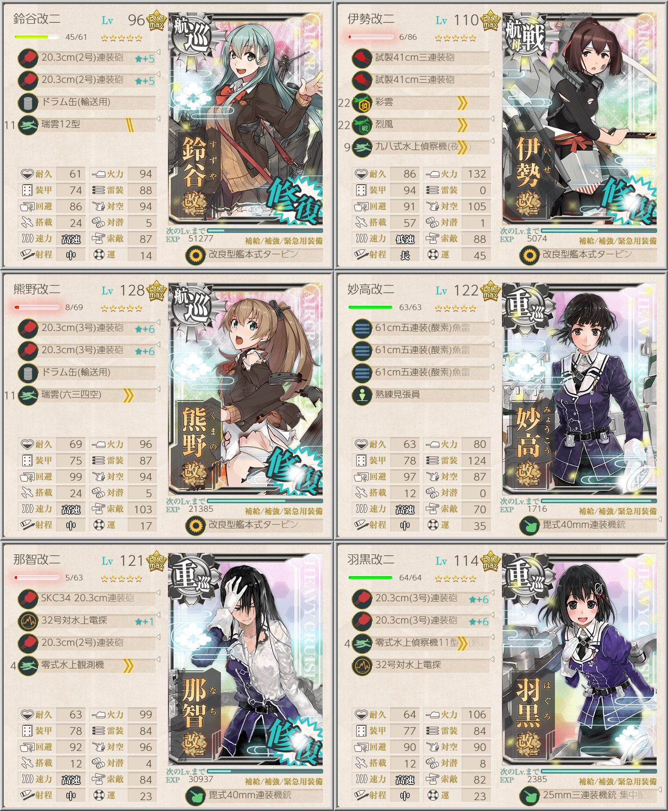
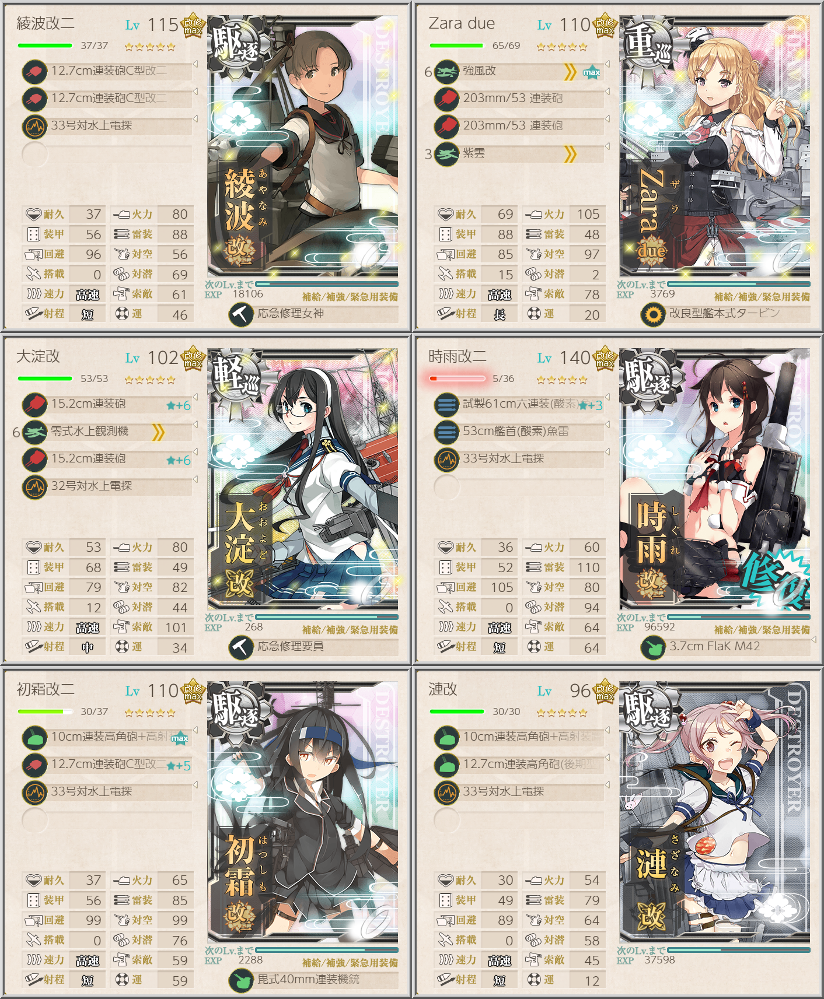

【艦これ】【第二期】2-5 沖ノ島沖【マンスリー】
2-5 攻略情報
任務
「第五戦隊」出撃せよ！（マンスリー）

妙高、那智、羽黒が固定
ドラム缶を2隻以上に搭載することで上ルートBFJO固定のため、ドラム缶＋火力＋制空補助の航巡を2隻
火力＋制空＋索敵＋T不利回避のために伊勢改二に彩雲、烈風、夜偵を装備
33式49以上必要なため、伊勢改二が用意できなければ妙高にも電探を積んだほうが安全か
「水上反撃部隊」突入せよ！（マンスリー）

駆逐艦を旗艦とし、重巡1軽巡1駆逐4の編成で2-5ボスにS勝利する任務
Zara dueで制空権を確保し、大淀で索敵を補助する
4スロ軽巡の夕張を索敵/夜戦補助要因としたり、由良で制空補助＋先制雷撃して霞に大型電探を搭載して索敵を賄う方法もある